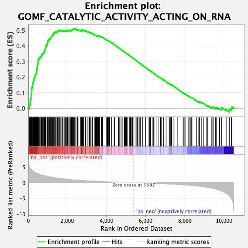
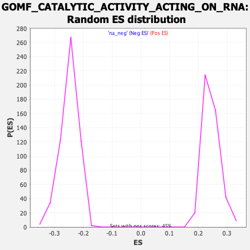

| Dataset | qlf.KOd4vsWTd4_gsea_score |
| Phenotype | NoPhenotypeAvailable |
| Upregulated in class | na_pos |
| GeneSet | GOMF_CATALYTIC_ACTIVITY_ACTING_ON_RNA |
| Enrichment Score (ES) | 0.5106073 |
| Normalized Enrichment Score (NES) | 2.0876353 |
| Nominal p-value | 0.0 |
| FDR q-value | 1.00818535E-4 |
| FWER p-Value | 0.009 |

| SYMBOL | RANK IN GENE LIST | RANK METRIC SCORE | RUNNING ES | CORE ENRICHMENT | |
|---|---|---|---|---|---|
| 1 | PUS1 | 44 | 5.471 | 0.0091 | Yes |
| 2 | METTL1 | 65 | 5.025 | 0.0195 | Yes |
| 3 | NOP2 | 91 | 4.713 | 0.0287 | Yes |
| 4 | FBL | 99 | 4.608 | 0.0393 | Yes |
| 5 | RCL1 | 110 | 4.509 | 0.0494 | Yes |
| 6 | FTSJ3 | 124 | 4.436 | 0.0590 | Yes |
| 7 | DDX56 | 142 | 4.300 | 0.0679 | Yes |
| 8 | TRMT61A | 148 | 4.282 | 0.0780 | Yes |
| 9 | EIF4A1 | 149 | 4.282 | 0.0885 | Yes |
| 10 | POLR2H | 169 | 4.124 | 0.0968 | Yes |
| 11 | DDX18 | 170 | 4.117 | 0.1069 | Yes |
| 12 | POLR1C | 175 | 4.084 | 0.1165 | Yes |
| 13 | POLR2E | 182 | 4.038 | 0.1259 | Yes |
| 14 | REXO2 | 190 | 3.993 | 0.1350 | Yes |
| 15 | METTL16 | 221 | 3.786 | 0.1413 | Yes |
| 16 | NSUN2 | 226 | 3.772 | 0.1502 | Yes |
| 17 | DIMT1 | 243 | 3.690 | 0.1577 | Yes |
| 18 | WDR4 | 246 | 3.672 | 0.1666 | Yes |
| 19 | NOB1 | 267 | 3.545 | 0.1733 | Yes |
| 20 | RPP14 | 270 | 3.533 | 0.1818 | Yes |
| 21 | G3BP1 | 295 | 3.442 | 0.1879 | Yes |
| 22 | POP1 | 315 | 3.354 | 0.1943 | Yes |
| 23 | DDX27 | 321 | 3.340 | 0.2020 | Yes |
| 24 | EXOSC7 | 344 | 3.257 | 0.2078 | Yes |
| 25 | EXOSC2 | 368 | 3.180 | 0.2134 | Yes |
| 26 | TRMT5 | 377 | 3.157 | 0.2204 | Yes |
| 27 | FARSB | 405 | 3.064 | 0.2253 | Yes |
| 28 | FARSA | 412 | 3.040 | 0.2321 | Yes |
| 29 | DUS1L | 414 | 3.033 | 0.2395 | Yes |
| 30 | RPP30 | 416 | 3.028 | 0.2468 | Yes |
| 31 | DIS3 | 442 | 2.955 | 0.2517 | Yes |
| 32 | POLR2F | 444 | 2.949 | 0.2588 | Yes |
| 33 | POLR1B | 452 | 2.934 | 0.2653 | Yes |
| 34 | DDX21 | 460 | 2.927 | 0.2718 | Yes |
| 35 | POLR1A | 471 | 2.905 | 0.2780 | Yes |
| 36 | POLR3D | 485 | 2.864 | 0.2838 | Yes |
| 37 | RPP38 | 491 | 2.850 | 0.2903 | Yes |
| 38 | POLR1E | 497 | 2.845 | 0.2968 | Yes |
| 39 | ELAC2 | 498 | 2.841 | 0.3038 | Yes |
| 40 | DHX33 | 512 | 2.815 | 0.3094 | Yes |
| 41 | SUPV3L1 | 528 | 2.791 | 0.3148 | Yes |
| 42 | TRMT11 | 545 | 2.766 | 0.3200 | Yes |
| 43 | TSEN2 | 576 | 2.674 | 0.3236 | Yes |
| 44 | TRMT1 | 602 | 2.620 | 0.3276 | Yes |
| 45 | TRMT2A | 611 | 2.591 | 0.3332 | Yes |
| 46 | DDX31 | 676 | 2.460 | 0.3330 | Yes |
| 47 | TRMT10A | 686 | 2.444 | 0.3381 | Yes |
| 48 | RPPH1 | 692 | 2.440 | 0.3436 | Yes |
| 49 | POLR2D | 720 | 2.372 | 0.3468 | Yes |
| 50 | DHX29 | 744 | 2.337 | 0.3503 | Yes |
| 51 | POLR3K | 767 | 2.299 | 0.3538 | Yes |
| 52 | METTL5 | 794 | 2.265 | 0.3568 | Yes |
| 53 | EXOSC1 | 805 | 2.250 | 0.3614 | Yes |
| 54 | DUS4L | 823 | 2.227 | 0.3652 | Yes |
| 55 | RTCB | 831 | 2.219 | 0.3699 | Yes |
| 56 | QTRT1 | 848 | 2.198 | 0.3738 | Yes |
| 57 | DDX3X | 857 | 2.190 | 0.3784 | Yes |
| 58 | DDX1 | 870 | 2.169 | 0.3825 | Yes |
| 59 | EXOSC4 | 871 | 2.169 | 0.3878 | Yes |
| 60 | DDX51 | 888 | 2.141 | 0.3915 | Yes |
| 61 | TRMT10C | 891 | 2.133 | 0.3966 | Yes |
| 62 | POLR3E | 902 | 2.120 | 0.4008 | Yes |
| 63 | NSUN5 | 950 | 2.066 | 0.4013 | Yes |
| 64 | PNPT1 | 951 | 2.066 | 0.4064 | Yes |
| 65 | DHX15 | 955 | 2.063 | 0.4111 | Yes |
| 66 | DTWD2 | 972 | 2.024 | 0.4145 | Yes |
| 67 | AARSD1 | 991 | 2.003 | 0.4177 | Yes |
| 68 | ERI3 | 992 | 2.003 | 0.4226 | Yes |
| 69 | DDX20 | 998 | 1.992 | 0.4270 | Yes |
| 70 | TARS2 | 1004 | 1.981 | 0.4314 | Yes |
| 71 | POLR3F | 1007 | 1.975 | 0.4361 | Yes |
| 72 | TGS1 | 1033 | 1.936 | 0.4384 | Yes |
| 73 | DHX37 | 1063 | 1.880 | 0.4401 | Yes |
| 74 | GATC | 1085 | 1.852 | 0.4426 | Yes |
| 75 | EIF4A3 | 1104 | 1.827 | 0.4454 | Yes |
| 76 | RNASEH1 | 1115 | 1.821 | 0.4489 | Yes |
| 77 | DHX30 | 1133 | 1.801 | 0.4516 | Yes |
| 78 | EDC3 | 1148 | 1.786 | 0.4546 | Yes |
| 79 | TYW3 | 1170 | 1.755 | 0.4569 | Yes |
| 80 | POP5 | 1194 | 1.735 | 0.4589 | Yes |
| 81 | EXOG | 1208 | 1.721 | 0.4619 | Yes |
| 82 | DDX39B | 1214 | 1.715 | 0.4656 | Yes |
| 83 | DCPS | 1234 | 1.698 | 0.4679 | Yes |
| 84 | RARS2 | 1255 | 1.673 | 0.4700 | Yes |
| 85 | DDX10 | 1275 | 1.654 | 0.4722 | Yes |
| 86 | POLR2J | 1276 | 1.653 | 0.4763 | Yes |
| 87 | EARS2 | 1287 | 1.640 | 0.4794 | Yes |
| 88 | POLR3H | 1292 | 1.634 | 0.4830 | Yes |
| 89 | POLR2K | 1328 | 1.601 | 0.4835 | Yes |
| 90 | TRNT1 | 1371 | 1.564 | 0.4832 | Yes |
| 91 | TSNAX | 1374 | 1.562 | 0.4868 | Yes |
| 92 | POLR2L | 1391 | 1.549 | 0.4891 | Yes |
| 93 | CARS2 | 1456 | 1.491 | 0.4865 | Yes |
| 94 | TUT1 | 1464 | 1.488 | 0.4894 | Yes |
| 95 | LACTB2 | 1490 | 1.460 | 0.4906 | Yes |
| 96 | POLR1D | 1500 | 1.454 | 0.4933 | Yes |
| 97 | EIF4A2 | 1503 | 1.454 | 0.4967 | Yes |
| 98 | PPP1R8 | 1543 | 1.419 | 0.4963 | Yes |
| 99 | DCP2 | 1572 | 1.397 | 0.4970 | Yes |
| 100 | DIS3L | 1604 | 1.371 | 0.4973 | Yes |
| 101 | DUS3L | 1613 | 1.365 | 0.4999 | Yes |
| 102 | EXOSC3 | 1661 | 1.327 | 0.4986 | Yes |
| 103 | EXOSC5 | 1716 | 1.290 | 0.4964 | Yes |
| 104 | EXOSC9 | 1753 | 1.263 | 0.4960 | Yes |
| 105 | ISG20L2 | 1757 | 1.261 | 0.4988 | Yes |
| 106 | DTD2 | 1826 | 1.204 | 0.4951 | Yes |
| 107 | MARS2 | 1870 | 1.171 | 0.4938 | Yes |
| 108 | NARS2 | 1894 | 1.157 | 0.4943 | Yes |
| 109 | DROSHA | 1907 | 1.146 | 0.4960 | Yes |
| 110 | RPP40 | 1952 | 1.113 | 0.4944 | Yes |
| 111 | DBR1 | 1954 | 1.110 | 0.4970 | Yes |
| 112 | ENDOG | 1988 | 1.089 | 0.4965 | Yes |
| 113 | POP4 | 2014 | 1.070 | 0.4967 | Yes |
| 114 | MRM1 | 2019 | 1.062 | 0.4989 | Yes |
| 115 | AGO2 | 2040 | 1.049 | 0.4995 | Yes |
| 116 | EXOSC8 | 2085 | 1.018 | 0.4977 | Yes |
| 117 | MED21 | 2100 | 1.009 | 0.4988 | Yes |
| 118 | DICER1 | 2147 | 0.986 | 0.4967 | Yes |
| 119 | ALKBH8 | 2177 | 0.970 | 0.4962 | Yes |
| 120 | APEX1 | 2191 | 0.964 | 0.4973 | Yes |
| 121 | DXO | 2196 | 0.963 | 0.4993 | Yes |
| 122 | DHX36 | 2220 | 0.945 | 0.4994 | Yes |
| 123 | DDX49 | 2231 | 0.936 | 0.5007 | Yes |
| 124 | RTCA | 2243 | 0.929 | 0.5019 | Yes |
| 125 | TFB1M | 2247 | 0.927 | 0.5039 | Yes |
| 126 | METTL8 | 2274 | 0.910 | 0.5036 | Yes |
| 127 | METTL4 | 2289 | 0.901 | 0.5044 | Yes |
| 128 | EXOSC10 | 2297 | 0.896 | 0.5059 | Yes |
| 129 | POLR2B | 2304 | 0.892 | 0.5075 | Yes |
| 130 | PTRH2 | 2310 | 0.890 | 0.5092 | Yes |
| 131 | GATB | 2334 | 0.880 | 0.5091 | Yes |
| 132 | POLR2C | 2342 | 0.876 | 0.5106 | Yes |
| 133 | VARS2 | 2366 | 0.865 | 0.5105 | No |
| 134 | DDX55 | 2407 | 0.850 | 0.5086 | No |
| 135 | PUS10 | 2490 | 0.807 | 0.5026 | No |
| 136 | RMRP | 2522 | 0.789 | 0.5015 | No |
| 137 | IFIH1 | 2524 | 0.789 | 0.5033 | No |
| 138 | FTSJ1 | 2527 | 0.788 | 0.5051 | No |
| 139 | TDP2 | 2548 | 0.779 | 0.5050 | No |
| 140 | POLRMT | 2673 | 0.731 | 0.4947 | No |
| 141 | USB1 | 2704 | 0.714 | 0.4935 | No |
| 142 | SND1 | 2718 | 0.709 | 0.4939 | No |
| 143 | CMTR2 | 2719 | 0.708 | 0.4957 | No |
| 144 | JMJD6 | 2723 | 0.707 | 0.4971 | No |
| 145 | YARS2 | 2731 | 0.701 | 0.4982 | No |
| 146 | DHX38 | 2732 | 0.701 | 0.4999 | No |
| 147 | DHX9 | 2745 | 0.694 | 0.5004 | No |
| 148 | TRMT13 | 2776 | 0.683 | 0.4992 | No |
| 149 | PARS2 | 2787 | 0.678 | 0.4998 | No |
| 150 | EXO1 | 2808 | 0.668 | 0.4995 | No |
| 151 | TRMT44 | 2833 | 0.657 | 0.4988 | No |
| 152 | LARS2 | 2914 | 0.623 | 0.4925 | No |
| 153 | THUMPD3 | 2927 | 0.619 | 0.4928 | No |
| 154 | IARS2 | 2928 | 0.619 | 0.4943 | No |
| 155 | POLR2I | 2932 | 0.618 | 0.4956 | No |
| 156 | AGO1 | 2938 | 0.616 | 0.4966 | No |
| 157 | SNRNP200 | 2953 | 0.613 | 0.4967 | No |
| 158 | FDXACB1 | 3045 | 0.580 | 0.4892 | No |
| 159 | MTFMT | 3057 | 0.577 | 0.4896 | No |
| 160 | METTL14 | 3104 | 0.559 | 0.4864 | No |
| 161 | PDE12 | 3134 | 0.551 | 0.4849 | No |
| 162 | MED20 | 3193 | 0.527 | 0.4805 | No |
| 163 | METTL6 | 3208 | 0.521 | 0.4804 | No |
| 164 | PARN | 3209 | 0.521 | 0.4817 | No |
| 165 | CPSF3 | 3213 | 0.520 | 0.4827 | No |
| 166 | PUS3 | 3276 | 0.498 | 0.4779 | No |
| 167 | CDKAL1 | 3277 | 0.498 | 0.4791 | No |
| 168 | TYW1 | 3375 | 0.468 | 0.4707 | No |
| 169 | DDX47 | 3435 | 0.452 | 0.4660 | No |
| 170 | TYW5 | 3447 | 0.446 | 0.4661 | No |
| 171 | RNASEH2A | 3472 | 0.437 | 0.4648 | No |
| 172 | MRPL44 | 3488 | 0.433 | 0.4644 | No |
| 173 | UPF1 | 3495 | 0.431 | 0.4649 | No |
| 174 | EMG1 | 3521 | 0.422 | 0.4634 | No |
| 175 | NSUN4 | 3534 | 0.419 | 0.4633 | No |
| 176 | CNOT7 | 3557 | 0.412 | 0.4621 | No |
| 177 | POLR2G | 3580 | 0.404 | 0.4610 | No |
| 178 | N4BP1 | 3581 | 0.404 | 0.4620 | No |
| 179 | RAD54B | 3583 | 0.404 | 0.4629 | No |
| 180 | LCMT2 | 3603 | 0.398 | 0.4620 | No |
| 181 | RPAP1 | 3614 | 0.394 | 0.4620 | No |
| 182 | TRMT1L | 3619 | 0.392 | 0.4625 | No |
| 183 | ALKBH1 | 3628 | 0.388 | 0.4627 | No |
| 184 | PRIM1 | 3646 | 0.384 | 0.4620 | No |
| 185 | TRMT10B | 3648 | 0.384 | 0.4628 | No |
| 186 | CMTR1 | 3747 | 0.358 | 0.4541 | No |
| 187 | DDX19A | 3755 | 0.355 | 0.4543 | No |
| 188 | CNOT6 | 3765 | 0.353 | 0.4543 | No |
| 189 | DDX46 | 3766 | 0.353 | 0.4551 | No |
| 190 | ZCCHC4 | 3773 | 0.351 | 0.4554 | No |
| 191 | TRMU | 3783 | 0.346 | 0.4554 | No |
| 192 | TERT | 3797 | 0.342 | 0.4550 | No |
| 193 | FEN1 | 3804 | 0.341 | 0.4552 | No |
| 194 | EXOSC6 | 4006 | 0.287 | 0.4362 | No |
| 195 | POLR3A | 4024 | 0.283 | 0.4352 | No |
| 196 | POP7 | 4046 | 0.277 | 0.4339 | No |
| 197 | KHNYN | 4053 | 0.274 | 0.4339 | No |
| 198 | DARS2 | 4076 | 0.270 | 0.4324 | No |
| 199 | CNOT8 | 4078 | 0.269 | 0.4330 | No |
| 200 | DDX54 | 4101 | 0.263 | 0.4315 | No |
| 201 | DDX50 | 4109 | 0.262 | 0.4315 | No |
| 202 | TFB2M | 4147 | 0.253 | 0.4284 | No |
| 203 | METTL3 | 4170 | 0.248 | 0.4269 | No |
| 204 | DDX41 | 4245 | 0.227 | 0.4202 | No |
| 205 | DTWD1 | 4250 | 0.226 | 0.4204 | No |
| 206 | POLR2A | 4251 | 0.226 | 0.4209 | No |
| 207 | IGHMBP2 | 4393 | 0.195 | 0.4076 | No |
| 208 | TRMT61B | 4419 | 0.187 | 0.4056 | No |
| 209 | NYNRIN | 4426 | 0.186 | 0.4055 | No |
| 210 | XRN2 | 4602 | 0.144 | 0.3887 | No |
| 211 | FANCM | 4624 | 0.140 | 0.3869 | No |
| 212 | CNOT2 | 4656 | 0.134 | 0.3842 | No |
| 213 | TRMT2B | 4743 | 0.115 | 0.3761 | No |
| 214 | TSEN34 | 4835 | 0.100 | 0.3674 | No |
| 215 | NUDT16L1 | 4905 | 0.088 | 0.3609 | No |
| 216 | ALKBH3 | 4925 | 0.085 | 0.3592 | No |
| 217 | CRCP | 4938 | 0.082 | 0.3582 | No |
| 218 | MEPCE | 4957 | 0.078 | 0.3566 | No |
| 219 | AQR | 4984 | 0.073 | 0.3543 | No |
| 220 | DDX5 | 5008 | 0.068 | 0.3522 | No |
| 221 | TOE1 | 5025 | 0.065 | 0.3508 | No |
| 222 | DDX19B | 5028 | 0.064 | 0.3507 | No |
| 223 | AARS2 | 5075 | 0.056 | 0.3464 | No |
| 224 | POLR3G | 5172 | 0.040 | 0.3371 | No |
| 225 | DDX59 | 5179 | 0.038 | 0.3366 | No |
| 226 | TRPT1 | 5208 | 0.033 | 0.3339 | No |
| 227 | DTD1 | 5229 | 0.031 | 0.3320 | No |
| 228 | DDX23 | 5235 | 0.030 | 0.3316 | No |
| 229 | SEPSECS | 5252 | 0.027 | 0.3301 | No |
| 230 | YBEY | 5298 | 0.019 | 0.3257 | No |
| 231 | RNMT | 5328 | 0.014 | 0.3229 | No |
| 232 | TRIT1 | 5331 | 0.014 | 0.3228 | No |
| 233 | TRMT12 | 5340 | 0.012 | 0.3220 | No |
| 234 | POLR2M | 5356 | 0.008 | 0.3206 | No |
| 235 | ALKBH5 | 5462 | -0.010 | 0.3103 | No |
| 236 | POLR3B | 5526 | -0.019 | 0.3042 | No |
| 237 | DHX35 | 5585 | -0.029 | 0.2985 | No |
| 238 | FARS2 | 5593 | -0.031 | 0.2979 | No |
| 239 | CNOT1 | 5607 | -0.033 | 0.2967 | No |
| 240 | MBLAC1 | 5615 | -0.034 | 0.2961 | No |
| 241 | FTO | 5702 | -0.047 | 0.2878 | No |
| 242 | BRIP1 | 5718 | -0.050 | 0.2865 | No |
| 243 | DHX57 | 5729 | -0.052 | 0.2856 | No |
| 244 | PTRHD1 | 5733 | -0.053 | 0.2855 | No |
| 245 | AGO3 | 5833 | -0.070 | 0.2759 | No |
| 246 | NSUN6 | 5856 | -0.072 | 0.2739 | No |
| 247 | DDX17 | 5983 | -0.094 | 0.2618 | No |
| 248 | DHX8 | 5992 | -0.096 | 0.2613 | No |
| 249 | ERI1 | 6169 | -0.128 | 0.2443 | No |
| 250 | LRRC47 | 6198 | -0.134 | 0.2419 | No |
| 251 | SARS2 | 6254 | -0.146 | 0.2369 | No |
| 252 | HARS2 | 6263 | -0.148 | 0.2364 | No |
| 253 | TSR3 | 6276 | -0.149 | 0.2356 | No |
| 254 | ELAC1 | 6331 | -0.161 | 0.2307 | No |
| 255 | DDX28 | 6370 | -0.170 | 0.2274 | No |
| 256 | QRSL1 | 6409 | -0.182 | 0.2242 | No |
| 257 | DUS2 | 6476 | -0.195 | 0.2182 | No |
| 258 | RPP21 | 6537 | -0.208 | 0.2128 | No |
| 259 | PSTK | 6643 | -0.234 | 0.2031 | No |
| 260 | DHX16 | 6757 | -0.263 | 0.1926 | No |
| 261 | ANGEL1 | 6763 | -0.265 | 0.1928 | No |
| 262 | YTHDC2 | 6783 | -0.269 | 0.1916 | No |
| 263 | METTL15 | 6794 | -0.272 | 0.1913 | No |
| 264 | PAN3 | 6826 | -0.281 | 0.1889 | No |
| 265 | DHX40 | 6918 | -0.306 | 0.1808 | No |
| 266 | BCDIN3D | 6929 | -0.309 | 0.1805 | No |
| 267 | DALRD3 | 7048 | -0.341 | 0.1698 | No |
| 268 | SMG6 | 7207 | -0.387 | 0.1553 | No |
| 269 | DHX34 | 7240 | -0.396 | 0.1531 | No |
| 270 | DDX52 | 7261 | -0.403 | 0.1521 | No |
| 271 | RNASEK | 7266 | -0.405 | 0.1527 | No |
| 272 | DDX42 | 7322 | -0.425 | 0.1484 | No |
| 273 | ANGEL2 | 7330 | -0.428 | 0.1488 | No |
| 274 | NSUN3 | 7346 | -0.434 | 0.1484 | No |
| 275 | ZC3H12A | 7450 | -0.469 | 0.1394 | No |
| 276 | TRDMT1 | 7638 | -0.548 | 0.1224 | No |
| 277 | PIF1 | 7918 | -0.660 | 0.0967 | No |
| 278 | RNASEL | 7928 | -0.664 | 0.0974 | No |
| 279 | DDX3Y | 8009 | -0.696 | 0.0913 | No |
| 280 | WARS2 | 8018 | -0.701 | 0.0922 | No |
| 281 | ERI2 | 8188 | -0.781 | 0.0776 | No |
| 282 | DHX32 | 8265 | -0.824 | 0.0722 | No |
| 283 | PIWIL2 | 8314 | -0.848 | 0.0695 | No |
| 284 | DDX43 | 8343 | -0.864 | 0.0689 | No |
| 285 | XRN1 | 8367 | -0.882 | 0.0688 | No |
| 286 | THUMPD2 | 8605 | -1.031 | 0.0481 | No |
| 287 | POLR3C | 8697 | -1.086 | 0.0419 | No |
| 288 | ENDOV | 8738 | -1.111 | 0.0407 | No |
| 289 | PRIMPOL | 8770 | -1.127 | 0.0404 | No |
| 290 | DDX24 | 8846 | -1.196 | 0.0360 | No |
| 291 | DIS3L2 | 8847 | -1.197 | 0.0389 | No |
| 292 | PAN2 | 8955 | -1.277 | 0.0316 | No |
| 293 | SKIV2L | 9130 | -1.436 | 0.0181 | No |
| 294 | ERN1 | 9177 | -1.495 | 0.0172 | No |
| 295 | EXD2 | 9358 | -1.681 | 0.0037 | No |
| 296 | MOV10 | 9391 | -1.724 | 0.0048 | No |
| 297 | NUDT16 | 9406 | -1.734 | 0.0077 | No |
| 298 | DDX60 | 9460 | -1.813 | 0.0070 | No |
| 299 | SAMHD1 | 9578 | -2.005 | 0.0004 | No |
| 300 | SLU7 | 9598 | -2.035 | 0.0035 | No |
| 301 | PCIF1 | 9635 | -2.093 | 0.0052 | No |
| 302 | CNOT6L | 9778 | -2.379 | -0.0029 | No |
| 303 | HELZ2 | 9873 | -2.563 | -0.0058 | No |
| 304 | ISG20 | 9899 | -2.614 | -0.0019 | No |
| 305 | DDX6 | 9906 | -2.631 | 0.0040 | No |
| 306 | PTRH1 | 10122 | -3.364 | -0.0088 | No |
| 307 | ZC3H12D | 10277 | -4.178 | -0.0136 | No |
| 308 | DHX58 | 10303 | -4.343 | -0.0054 | No |
| 309 | DDX58 | 10390 | -5.031 | -0.0015 | No |
| 310 | RNASE4 | 10415 | -5.267 | 0.0091 | No |
